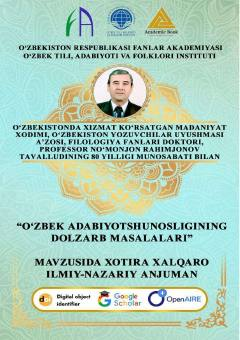

OAO'zbek adabiyotshunosligining dolzarb muammolariga bag'ishlangan xalqaro ilmiy-nazariy konferensiya materiallari to'plami.
Ushbu to'plam O'zbekiston Respublikasi Fanlar akademiyasi O'zbek tili, adabiyoti va folklori instituti tomonidan o'tkazilgan xalqaro ilmiy-nazariy konferensiya materiallarini o'z ichiga oladi. Kitobda o'zbek adabiyotshunosligining dolzarb masalalari, xususan, adabiy jarayonlar va ijodkorlar faoliyati tahlil qilingan.